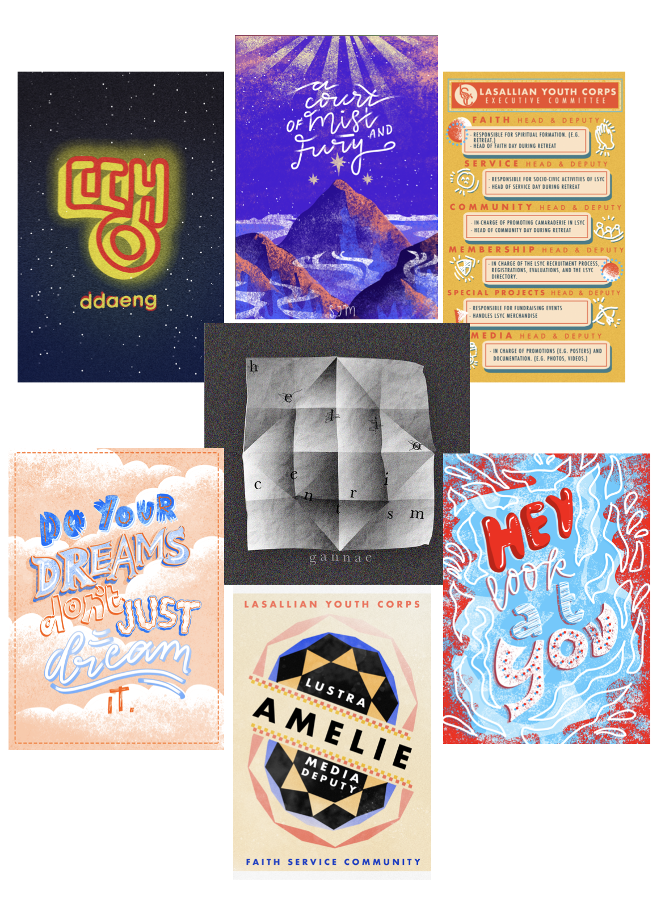
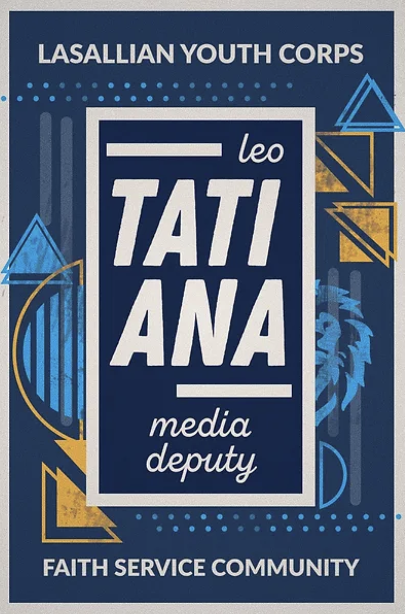
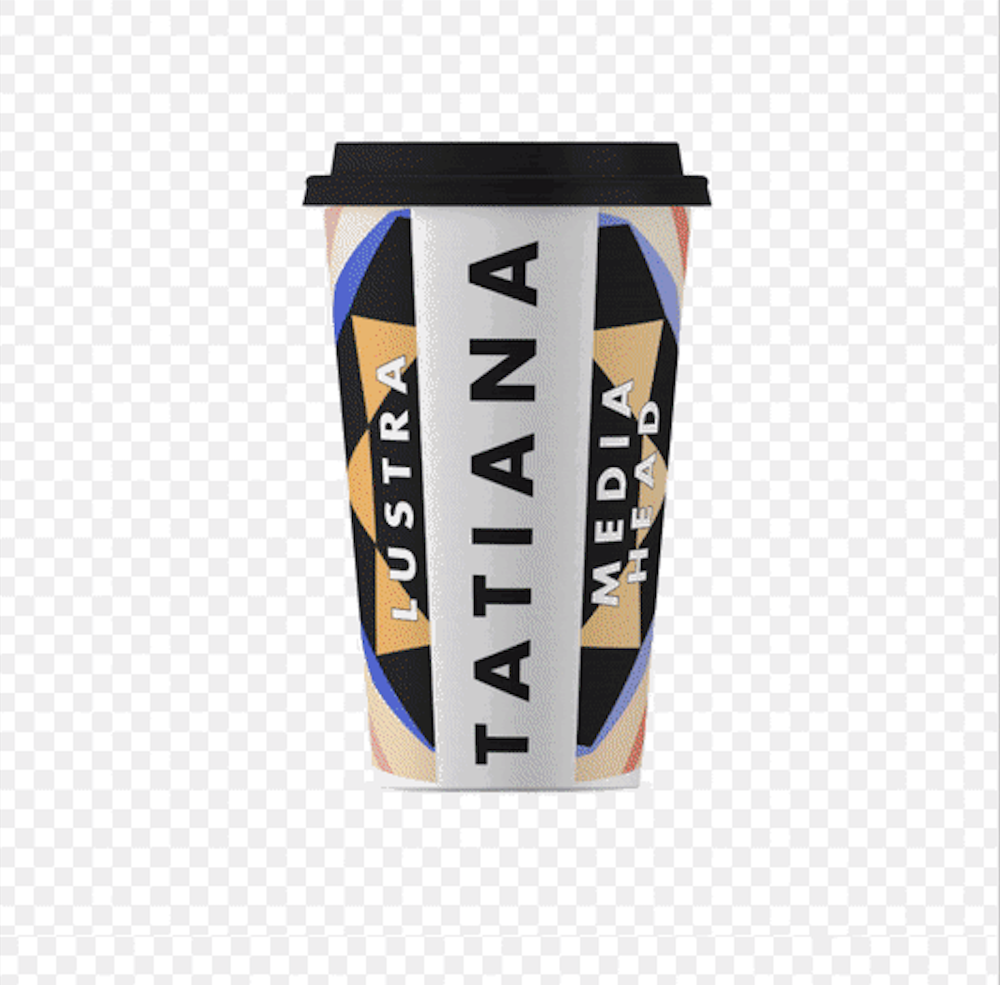
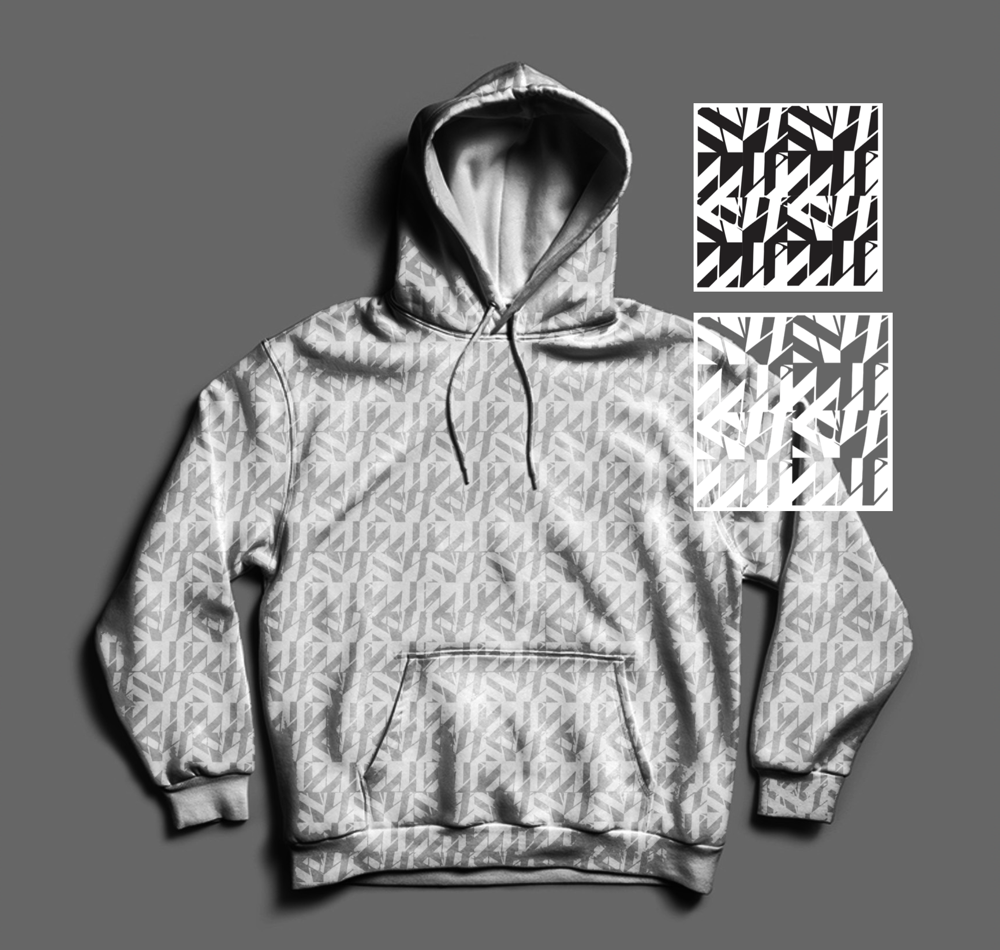
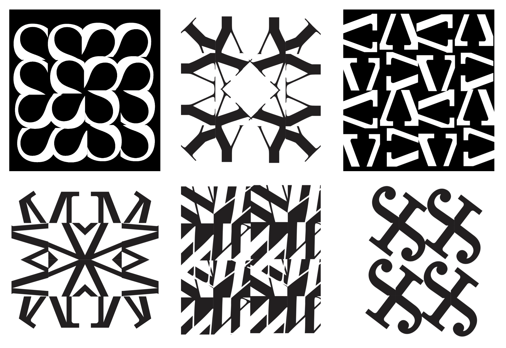

DESIGN
Designed through Adobe Creative Cloud apps such as Photoshop, Indesign and Illustrator, Keynote, and more.
CHAVACANO WIKIBOOK

A Wikipedia page about the dying dialect of Chavacano translated into a book.
POSTER DESIGNS



MARIA MAKILING BOOK


A comissioned DERT children's book about the legend of Maria Makiling
DLSZ FAIR SHIRT COMPETITION

A T-Shirt design for all faculty and students to wear at De La Salle Santiago Zobel School.
MOCHA BOOK


A omissioned DERT children's book about my childhood cat, Mocha Cola.
LSYC ORGANIZATION



Throughout the years being in this organization as becoming part of the media committee, to Media Deputy, to finally becoming the Media Head of LSYC, I had many projects to fulfill in those roles. Here are some of them.
TYPOGRAPHY, IDENTITY, GRAPHOLOGY BOOK

An exploration over the relation between typography, identity, and the science of graphology.
LETTER/LOGO PATTERN EXPLORATION

